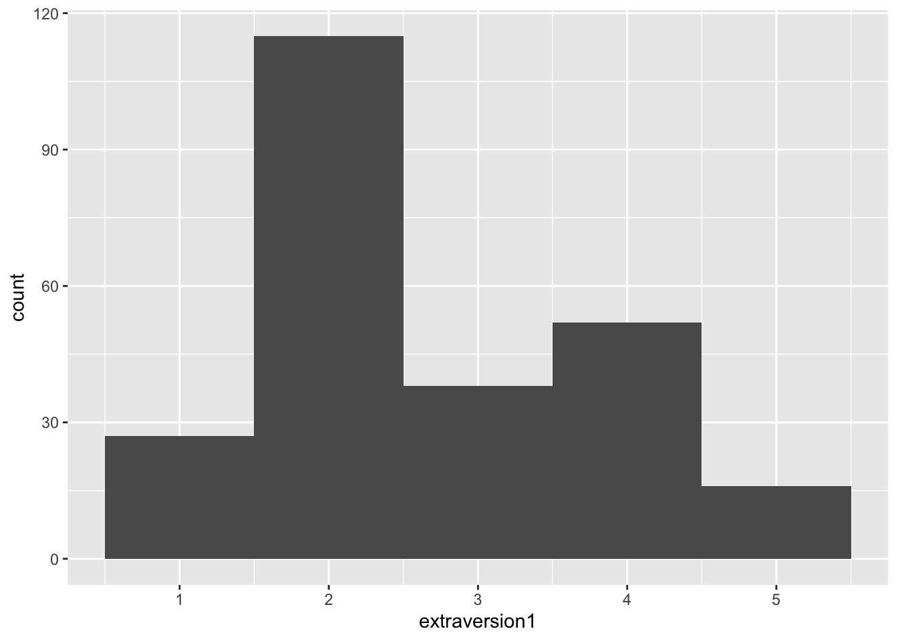
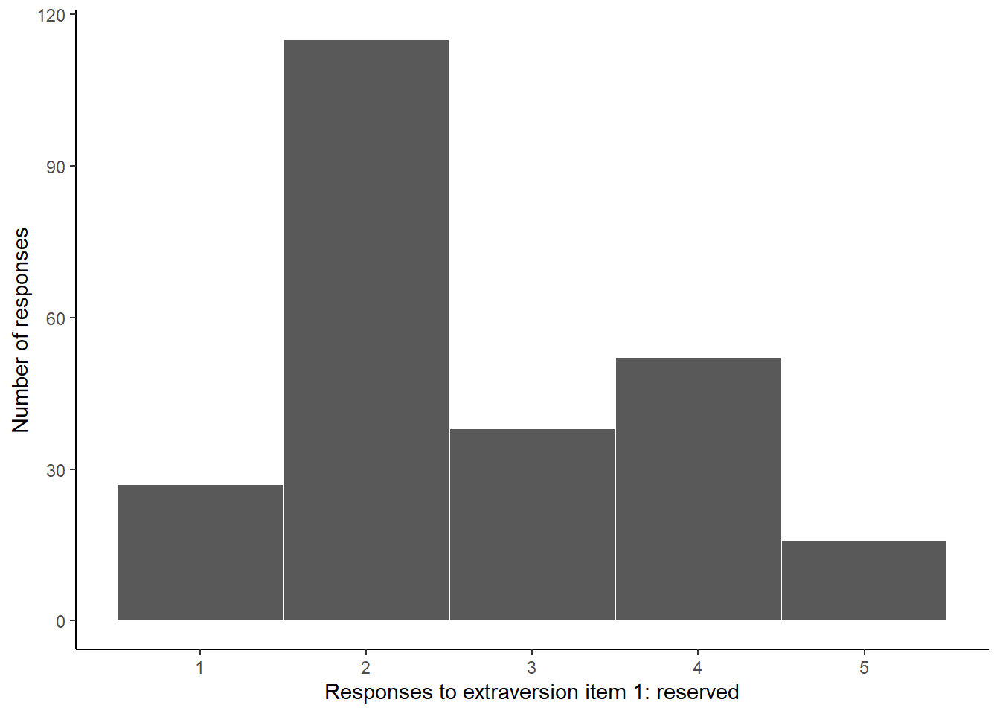
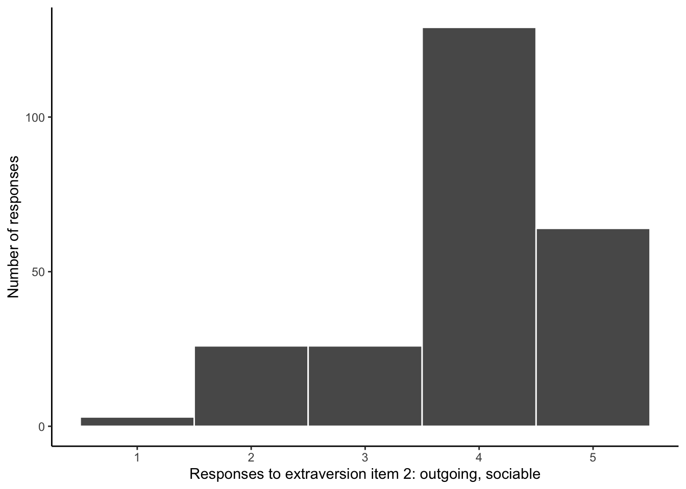
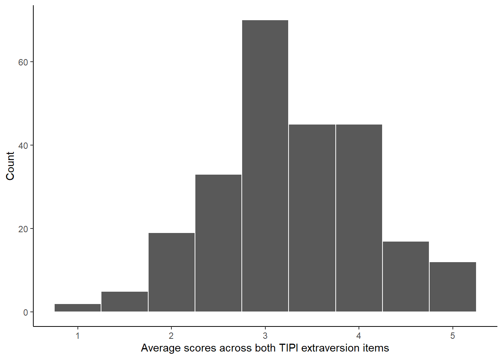

library(tidyverse)
data_cleaned <- read_csv("data/gss_2006.csv") |>
select(extraversion1 = big5a1,
extraversion2 = big5a2,
zodiac) |>
mutate(zodiac = factor(zodiac, levels = c(5, 12), labels = c("Leo", "Pisces"))) |>
mutate(extraversion2 = 6 - extraversion2) |>
mutate(extraversion_mean = rowMeans(across(c(extraversion1, extraversion2)))) |>
drop_na()4 Analysis
You will start this session with your cleaned data ready to use in R. By the end of the session you will have computed the test statistic, produced some visualizations of your data, and be ready to present and write up your findings.
Goals
- Describe and visualize your data
- Perform the appropriate analysis
- Interpret the results
4.1 Analyzing data in R
Running with my example from last week, I want to compare average extraversion scores between Leos and Pisces. I made a data.frame with just those columns; recoded the Zodiac labels and reverse-scored one of the extraversion items; and computed an extraversion mean score. To refresh your memory, here’s the entire pipeline from start to finish:
Describing your data
The most common descriptive statistics are the mean (\(M\)) and standard deviation (\(SD\)). You should report these for each variable in your analysis.
You can find these for a set of numbers using R’s built-in mean() and sd() functions.
mean(data_cleaned$extraversion1)[1] 2.657258sd(data_cleaned$extraversion1)[1] 1.120054This might be a perfectly appropriate approach, but with a lot of variables it might not be the most efficient (and it kind of violates the DRY principle: don’t repeat yourself).
A more powerful approach is to use tidyverse summarize() function. There you can create any number of named variables, each computing some kind of summary. The biggest advantage is you can specific a grouping variable using the .by argument. This means that each of the statistics you ask for will be computed separately for each category of the grouping variable.
data_cleaned |>
summarize(n = n(),
mean = mean(extraversion_mean),
sd = sd(extraversion_mean),
.by = zodiac)# A tibble: 2 × 4
zodiac n mean sd
<fct> <int> <dbl> <dbl>
1 Leo 119 3.39 0.857
2 Pisces 129 3.19 0.791ci <- function(x) {
qt(.975, df = length(x) - 1) * sqrt( var(x) / length(x) )
}
summary <- data_cleaned |>
summarize(n = n(),
mean = mean(extraversion_mean),
sd = sd(extraversion_mean),
ci = ci(extraversion_mean),
.by = zodiac)Visualizing the data
In addition to reporting the mean and standard deviation, it is useful to visualize the distribution of the data. This can reveal nuances that are not obvious in those single numeric summary values.
As with most things, there are a lot of different ways of producing graphs using R. One of the most widely used and powerful is the ggplot2 package.1 The name refers to the idea of the “grammar of graphics”, and it is built around a layering approach. You first specify your data and aesthetics (what should data will go on the x and y axes), then geometry (do you want data to be represented by points or bars or as a histogram?), any scaling (e.g. what values should be labeled on each axis), and theme elements (how do you want the plot to look generally?). There can be a lot of complexity, but building things up layer by layer, gradually adding and refining elements, is a powerful and satisfying approach.
Here’s a simple histogram of the first extraversion item. I pipe the data into the ggplot() function, specifying that I want the extraversion1 column to be represented as the x aesthetic. Then I add geometry using geom_histogram. That geom function automatically computes bins and counts; here I just specify I want a binwidth of 1, i.e. each column of the histogram will represent one scale point. Note that ggplot layers are added using + rather than the usual |> pipe.
data_cleaned |>
ggplot(aes(x = extraversion1)) +
geom_histogram(binwidth = 1)

The default theme is perfectly serviceable, but you can customize every element. Here I’ll specify a couple of aspects using the theme() function, and I’ll assign it to the name theme_apa. Then I can always add theme_apa as a layer to my plots going forward.
theme_apa <- theme(
panel.background = element_blank(),
axis.line = element_line()
)I’ll also customize the “breaks” on the x-axis (where the ticks and numeric labels go) and the axis labels.
data_cleaned |>
ggplot(aes(x = extraversion1)) +
geom_histogram(binwidth = 1, color = "white") +
scale_x_continuous(breaks = 1:5) +
labs(x = "Responses to extraversion item 1: reserved",
y = "Number of responses") +
theme_apa

Here’s a histogram of the other extraversion item.
data_cleaned |>
ggplot(aes(x = extraversion2)) +
geom_histogram(binwidth = 1, color = "white") +
scale_x_continuous(breaks = 1:5) +
labs(x = "Responses to extraversion item 2: outgoing, sociable",
y = "Number of responses") +
theme_apa

And here’s a histogram of the average extraversion scores I computed.
data_cleaned |>
ggplot(aes(x = extraversion_mean)) +
geom_histogram(binwidth = 0.5, color = "white") +
scale_x_continuous(breaks = 1:7) +
labs(x = "Average scores across both TIPI extraversion items",
y = "Count") +
theme_apa

Notice that while both individual extraversion items were a bit skewed, the distribution of averages is approximately normally-distributed (albeit with a big spike in the middle).
4.2 Hypothesis test
The \(t\) statistic
The \(t\)-test can be computed with a single line of code, as you’ll see. But it’s important to understand the math happening behind the scenes.
If you need to refresh your memory from a past statistics class, refer to the \(t\)-test Appendix.
The \(t\)-test
R has a built-in t.test() function.
t.test(formula = extraversion_mean ~ zodiac, data = data_cleaned, var.equal = TRUE)
Two Sample t-test
data: extraversion_mean by zodiac
t = 1.916, df = 246, p-value = 0.05652
alternative hypothesis: true difference in means between group Leo and group Pisces is not equal to 0
95 percent confidence interval:
-0.005610518 0.406626738
sample estimates:
mean in group Leo mean in group Pisces
3.386555 3.186047 Visualizing the difference
summary |>
ggplot(aes(x = zodiac, y = mean)) +
geom_col() +
geom_errorbar(aes(ymax = mean + ci, ymin = mean - ci), width = 0.2) +
coord_cartesian(ylim = c(1, 5)) +
theme_apa
The
ggplot2package is part of thetidyverse, so because we already ranlibrary(tidyverse)earlier theggplot2functions are already available to us. If you needed to, you could always runlibrary(ggplot2)to activate it separately.↩︎